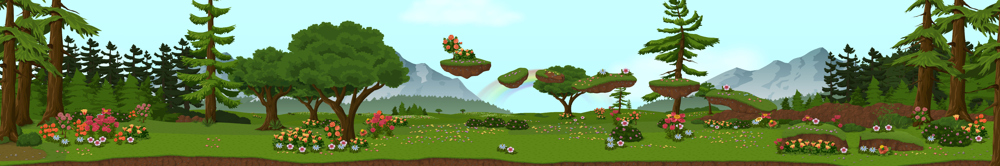
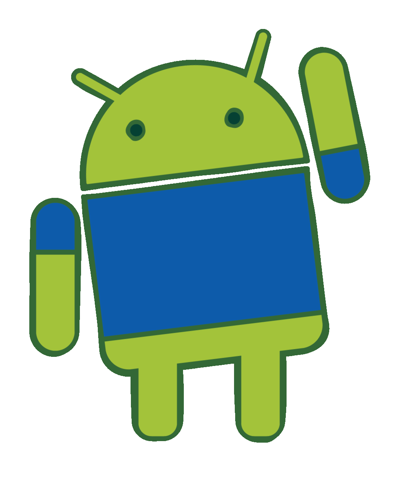
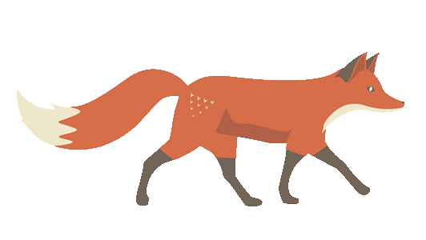

Sun Devils 🔱
I am a graduate student at Arizona State University. I work as Psyche Reseach Aide at NASA Mission to Psyche program at ASU. I have created NASA Psyche Android app which engages public with the Psyche mission. I have also revamped Psyche Review app which helps reviewers from ASU, NASA JPL select incoming undergraduate interns for Psyche Inspired Program. I can probably talk/code Android application all day long without coffee. This is the most facinating thing I have seen in Software Design.